「なぞリンク」では、あるテーマに沿った、いきものたちの不思議なつながりを知ることができます。
ゆっくり時間があるときに、ぜひ使ってみたい機能です。
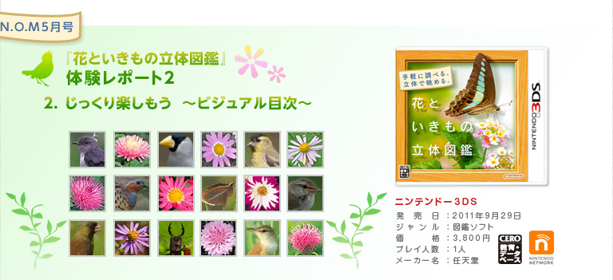
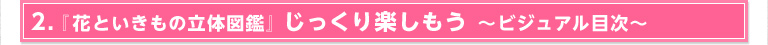
『花といきもの立体図鑑』は、調べ物があるとき以外でも、自宅でじっくり読んで楽しめるよう工夫がなされています。ちょっとした空き時間に自然にまつわるコラムを読んだり、動植物の生態について勉強したりできるのです。
ここでは、家の中でゆっくり図鑑を楽しむための機能を、ひきつづき開発スタッフからのコメントとともに、まとめてご紹介します。
『花といきもの立体図鑑』には、「バラエティ検索」と並ぶ大きな機能として「ビジュアル目次」が搭載されています。
紙の図鑑を超える検索しやすさを追求したのが「バラエティ検索」だとすれば、この「ビジュアル目次」は閲覧しやすさを追求しています。
「ビジュアル目次」を開くと、「分類」ごとに並べられた動植物の小さな画像が大量に表示され、圧倒されます。この画像は見やすい大きさに変えることができ、ほかに「50音」「時期」「色」「コンテンツ」という条件でも並べ替えることができます。
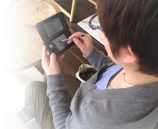
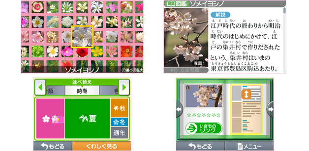
下画面をタッチペンでなぞっていくと、上画面に表示された動植物の画像リストも連動して動きます。なにげなく見たいものを探すという一連の操作は、紙の図鑑をパラパラとめくるような感覚に近いものがあります。さらに「いきものリンク」から、関連する動植物の図鑑やコラムなどを好きなように読み進めてもいいでしょう。
昆虫だけをまとめて見たり、さまざまな種類の黄色い花だけを見てみたり……。紙の図鑑なら何冊も用意しないとできないようなことが簡単にできてしまうのは、デジタルの図鑑ならではです。
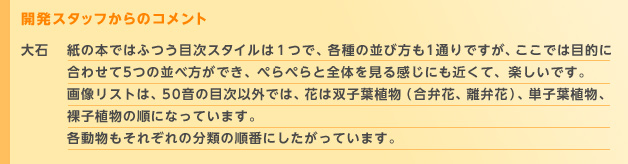

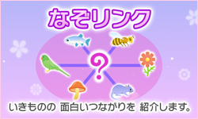
たとえば5月の「夏鳥」の場合は、「ツバメ」→「チュウサギ」→「アオバズク」というふうに、「夏鳥」というテーマに沿ったいきものが解説とともにどんどん表示されていきます。全部読み終わると、登場したいきもののリストが表示されます。
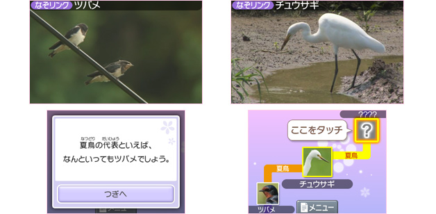
もちろん、それぞれの「夏鳥」たちの図鑑ページを開いて、解説や「なきごえビュー」、「いきものリンク」へと読み進めることもできます。「なぞリンク」のテーマは実に豊富で、これだけで一冊の本になりそうなボリュームがあります。
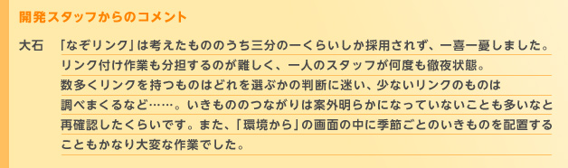
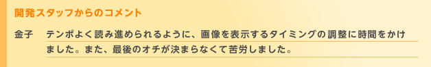
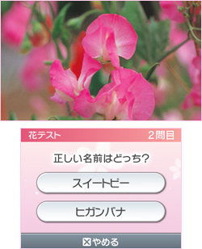
『花といきもの立体図鑑』のユニークな機能に「花テスト」があります。
上画面に表示された花の名前を当てる簡単な2択クイズですが、一問でも間違えるとゲームオーバーです。連続正解数の記録をどれだけ伸ばせるか、ぜひチャレンジしてみましょう。
間違えたときは、正解の花を「バラエティ検索」で調べれば、知らなかった花の名前や生態も、すいすい覚えられます。同じ花でも2択の組み合わせは毎回変わりますし、少しずつ難しくなっていくので、飽きてしまうこともありません。
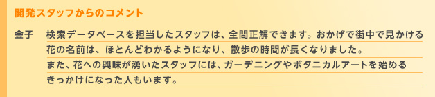
タイトルメニューにある「記録を見る」では、それまでに読んだ図鑑のページ数や「花テスト」の連続正解数、「みつけた」や「お気に入り」にチェックを入れた図鑑ページをまとめて見ることができます。
外出先で見つけた花や「花テスト」で間違えた花、好きな花などの図鑑ページにチェックを入れておいて、空き時間に記録を見返せば、花といきもの博士になれそうです。
持ち運べる図鑑として、手軽な読み物として、学習ソフトとして。『花といきもの立体図鑑』は、さまざまな用途に対応してくれます。みなさんもぜひ、自分なりの楽しみ方を見つけてみてください。
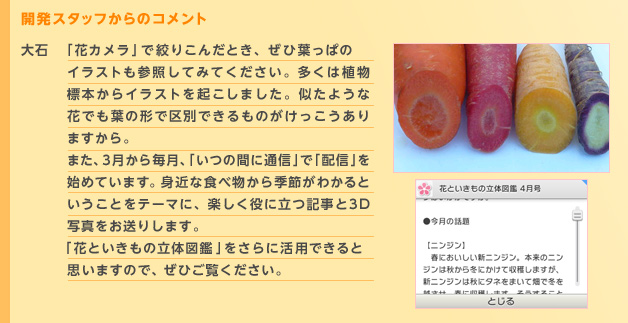
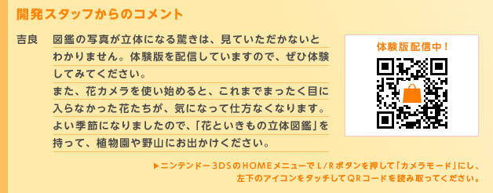
『花といきもの立体図鑑』体験レポート＆
『ニンテンドー3DS 3D写真コンテスト』審査員コメント